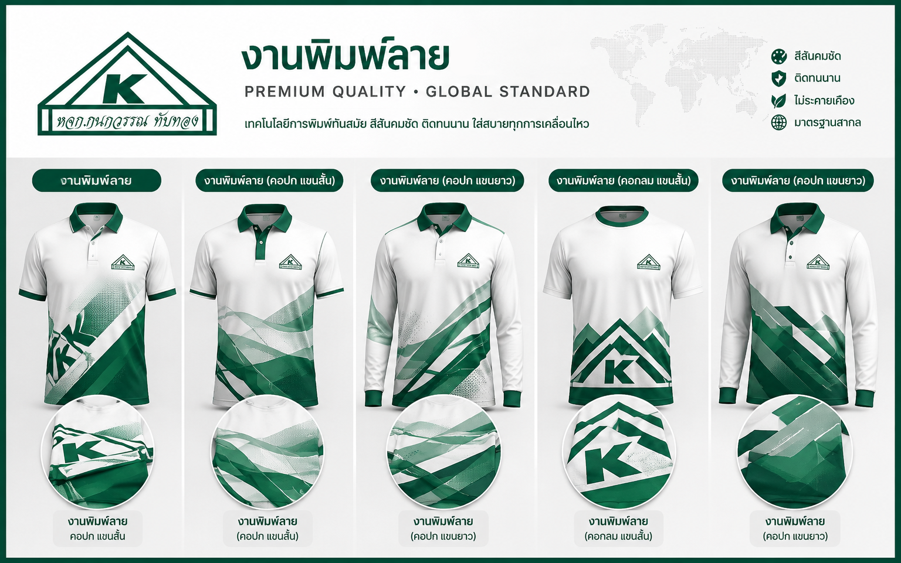
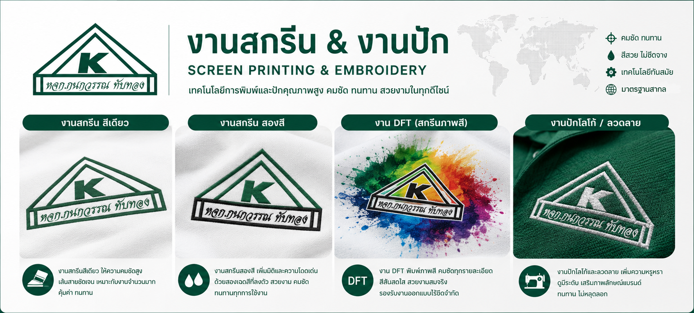
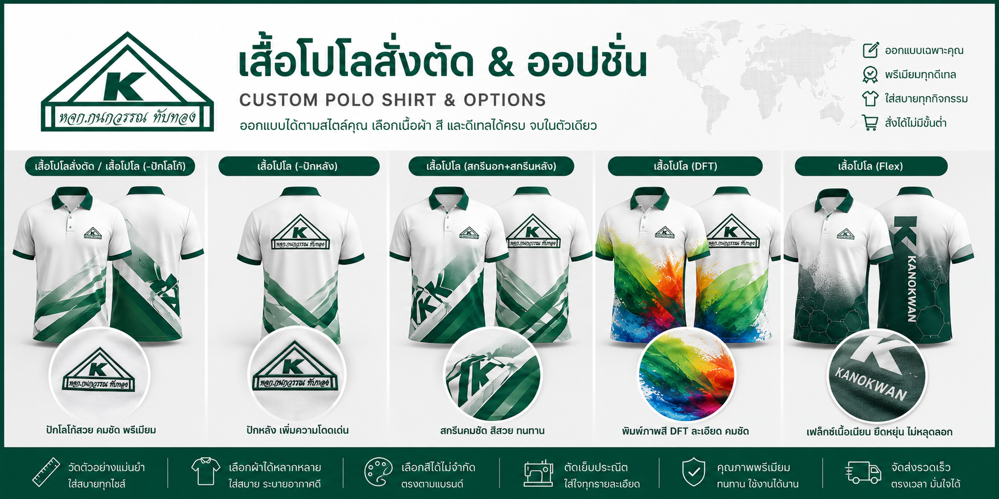
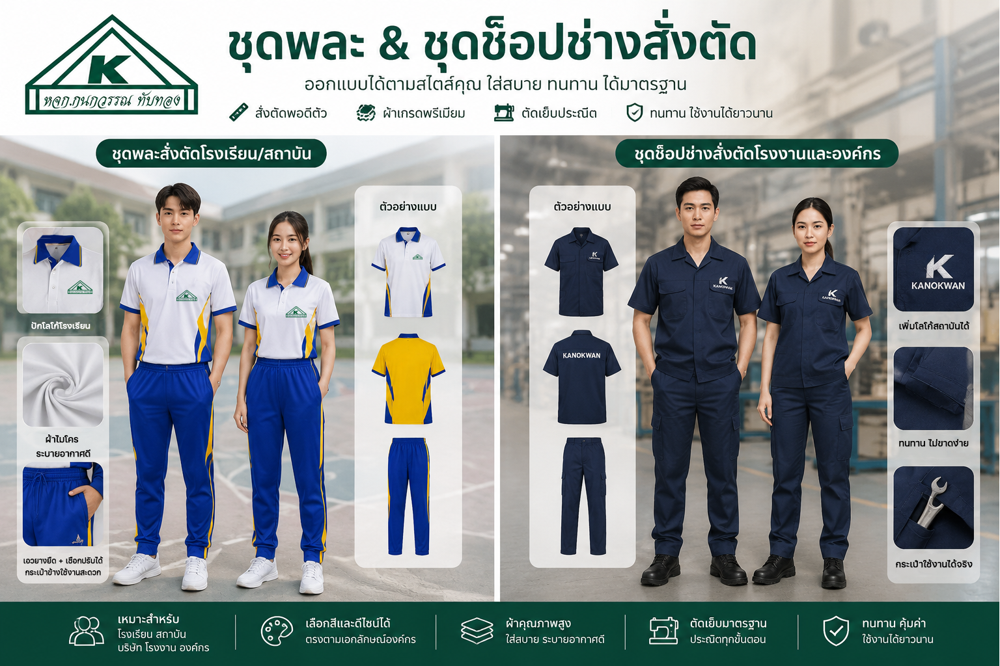
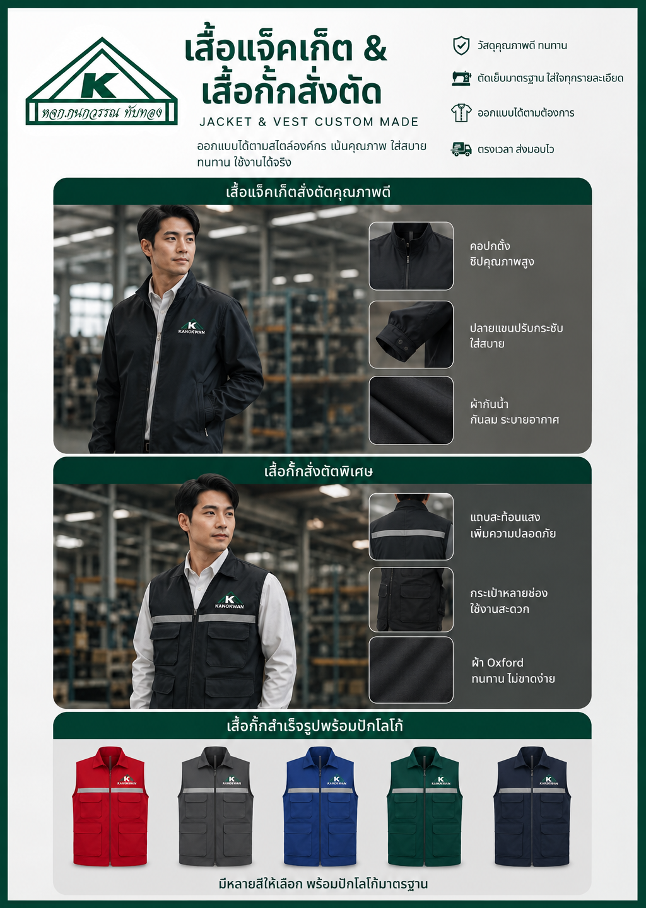

หมวดหมู่และประเภทสินค้า

Sublimation
งานพิมพ์ลาย
- งานพิมพ์ลาย (คอปก แขนสั้น)
- งานพิมพ์ลาย (คอปก แขนยาว)
- งานพิมพ์ลาย (คอกลม แขนสั้น)
- งานพิมพ์ลาย (คอปก แขนยาว)

Screen & Embroidery
งานสกรีน & งานปัก
- งานสกรีน สีเดียว
- งานสกรีน สองสี
- งาน DFT (สกรีนภาพสี)
- งานปักโลโก้ / ลวดลาย

Polo Custom
เสื้อโปโลสั่งตัด & ออปชั่น
- เสื้อโปโลสั่งตัด / เสื้อโปโล (-ปักโลโก้)
- เสื้อโปโล (-ปักหลัง)
- เสื้อโปโล (สกรีนอก+สกรีนหลัง)
- เสื้อโปโล (DFT) / เสื้อโปโล (Flex)

Uniforms
ชุดพละ & ชุดช็อปช่างสั่งตัด
- ชุดพละสั่งตัดโรงเรียน/สถาบัน
- ชุดช็อปช่างสั่งตัดโรงงานและองค์กร

Jackets & Vests
เสื้อแจ็คเก็ต & เสื้อกั๊กสั่งตัด
- เสื้อแจ๊คเก็จสั่งตัดคุณภาพดี
- เสื้อกั๊กสั่งตัดพิเศษ
- เสื้อกั๊กสำเร็จรูปพร้อมปักโลโก้